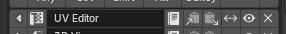
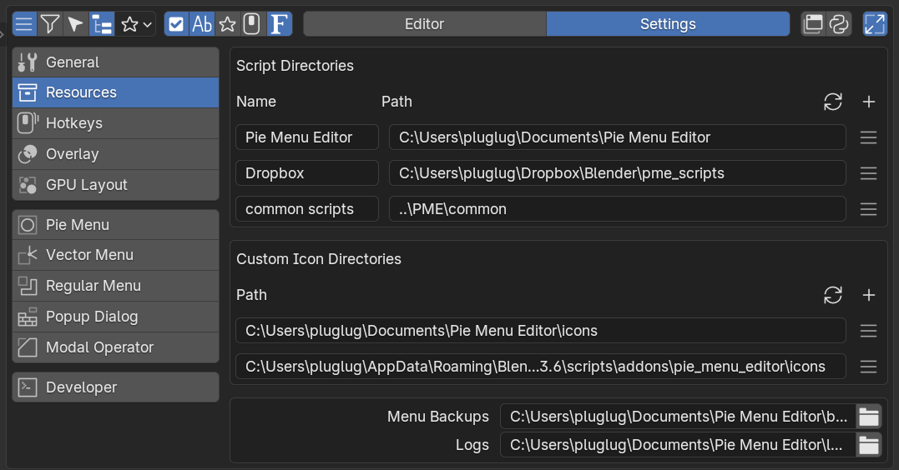

Settings¶
Settings controls Pie Menu Editor as a whole. Open Pie Menu Editor under Edit > Preferences > Add-ons, then select Settings in the Editor / Settings tabs at the top.
The ten tabs on the left are grouped by scope: the first five contain global settings, the next four contain editor-specific defaults, and the last contains developer settings.
General¶
General controls PME’s interface, menu list width and row count, automatic backups and tags, and expert options. Defaults for individual editors are in the editor-specific tabs below.
Interface
N-Panel Preferences¶
Shows PME settings in the 3D Viewport’s Sidebar (N-Panel). When enabled, a PME tab provides access to the main settings without opening the Preferences window.
Expand Slot Tools¶
Expands slot tools such as copy, delete, and move when the Slot Editor opens.


Operator Editor¶
Uses the Operator Properties Editor in the Command tab, with controls comparable to Blender’s Adjust Last Operation (formerly F6). When disabled, it falls back to Blender’s generic input fields.
Multi-line Command Editor¶
Shows Command and Custom code in a multi-line field, including Context Router targets. Requires Blender 5.2 or newer and is off by default. On older Blender versions, the setting is dimmed but can still be toggled; the existing single-line field is used regardless of its value.
Importing JSON that adds or replaces a Command or Custom containing line breaks automatically enables this setting and displays an INFO message. This also enables the setting on Blender versions older than 5.2, where the field remains single-line.
Press Shift+Enter to insert a line break and Enter to finish editing the field, then click OK to save the slot. In the Preferences window, you can also move the pointer outside the field and press Enter to save. If the pointer stays over the field, Enter starts editing it again. Drag the field’s bottom-right corner to change its height; longer text scrolls inside the field. The PME popup editor keeps the single-line field even with this setting enabled. Open Preferences to edit multiple lines.
Persist Tree State¶
Remembers expanded and collapsed groups in the menu tree after Blender closes.
Show Tree Group Counts¶
Shows the number of menus in tree group rows, such as tag headings.
List Width¶
Width of the menu list on the left of the editor, as a percentage. Range: 1–80; default: 40.
List Rows¶
Number of visible rows in the menu list. Range: 5–50; default: 10.
Search Keywords¶
Chooses what Search / Select matches in addition to menu names. You can select multiple options:
Hotkey — The assigned hotkey text, such as
Ctrl+Shift+A.Extend Target — The destination class ID for Extend Panel / Extend Menu, such as
VIEW3D_MT_object.UID — PME’s internal UID string.
Only Hotkey is enabled by default.
Automation
Auto Backup¶
Creates a backup whenever menu edits are saved. Timestamped files accumulate in the Menu Backups location under Menu Backups / Logs. To keep overwriting one file instead, use Overwrite Backup File.
Cache Scripts¶
Caches external Python scripts loaded by Custom / Command slots, reducing loading overhead when the same script runs repeatedly.
Expert
Show Error Trace¶
Shows traceback information when a slot’s Python code raises an exception (Description / Poll / Custom / Command).
Sidebar Tab Memory (Retired)¶
PME 2.1 no longer displays or uses this legacy setting. Toggle Side Area does not separately read and restore Sidebar tab names, because accessing this Blender information directly can cause crashes. When Preserve Side Area State retains a supported editor’s state, the visible panel may return as part of it; this does not provide general memory for all Sidebar tabs. Sidebar visibility and the opened area’s width or height are still remembered during the current Blender session. Existing settings can still be loaded.
Show Command Tab Undo¶
Shows the Undo Previous Command checkbox in the Command tab. See Macro Operator Editor and Stack Key Editor.
Preserve Side Area State¶
Restores an editor’s working state when reopened after Toggle Side Area closes or switches it. Off by default. Supported state includes Outliner search and filters, the Properties context, and the Node Editor’s node tree. File Browser / Asset Browser are excluded, and remembered state does not survive a Blender restart.
Warning
This experimental feature may destabilize Blender, and restoration may not work in every Blender version.
Resources¶

Configure where PME finds scripts and custom icons, and where it writes menu backups and logs. Use Script Directories for scripts and Custom Icon Directories for custom icons. The bottom box contains Menu Backups and Logs.
Changed in version 2.2.0: Added multiple resource folders and separate menu backup and log destinations. These locations are saved in the boot config file.
Script Directories¶
Each row registers a folder containing scripts. Choose a folder with + to fill Name with its folder name. If it contains icons/, that folder is also added to Custom Icon Directories.
Name — The display name in this list and in file browsers’ Quick Locations. Changing it does not rename the directory.
Path — The registered location. Edit it directly using an absolute path or a path relative to the folder containing the running Blender executable (for example,
blender.exeon Windows).
PME uses every registered folder. Script references such as scripts/tool.py are relative to these folders. See File Locations for the folder structure and default locations.
When different files share the same script path or icon name, the top of the tab lists them with their paths. These scripts and icons are not used until the names are unique. Scripts in scripts/autorun/, scripts/register/, and scripts/unregister/ are the exception: every copy runs, so they are not listed.
Script conflicts are checked when you add, change, or remove a folder, not at startup. After restarting Blender, or after adding, renaming, or moving files outside Blender, use the refresh button to the left of + in Script Directories.
Row Menu¶
The menu at the right end of each row shows that folder’s script count and provides these actions:
Open Folder — Open the registered location in the operating system’s file browser.
Choose Folder… — Choose another location in the file browser.
Create Subfolders — Create missing
scripts/andexports/subfolders, preserving existing files.Remove Resource Folder — Remove the registration after confirmation. Files remain on disk, but slots that use its scripts no longer find them. Its icon folder stays registered. The last registration cannot be removed.
Custom Icon Directories¶
Each row registers a folder whose PNG files are used as custom icons. PME reads the files directly inside it, not its subfolders. Add a folder with +, or edit Path directly. Paths use the same absolute and relative rules as resource folders. After adding or changing PNG files outside Blender, reload them with the refresh button to the left of + in Custom Icon Directories.
The row menu shows the icon count and provides Open Folder, Choose Folder…, and Remove Icon Folder. The list can be empty; then only the bundled icons are available. Removing an icon folder keeps its files on disk.
Menu Backups / Logs¶
Menu Backups sets the destination for menu-setting backups. Logs sets the destination for diagnostic logs. Edit each path directly or choose a folder using the button at its right end. Destinations can be inside a resource folder or elsewhere. Changing the resource list does not change these output locations.
Path changes are saved in the boot config file; Save Preferences is not required. Changing a location does not move existing files.
Related: File Locations, Custom Icons
Hotkeys¶
Configures PME’s own hotkeys and shared input timing: the PME and Widget Context Menu shortcuts, plus HOLD / CHORD / TWEAK time and distance thresholds. Keymap Doctor checks for conflicts with the active Blender keymaps.
PME Hotkey¶
Opens the Capture Menu (Quick Capture). The default is Ctrl+Shift+P, registered in Blender’s Screen Editing keymap.
Drag Thresholds¶
These are Blender’s shared drag settings, also available in Preferences → Input → Mouse. They affect PME’s Tweak mode and Blender’s native drag gestures:
Mouse Drag Threshold: dragging while a mouse button is held.
Tablet Drag Threshold: dragging with a pen while a mouse button is held.
Drag Threshold: dragging while a keyboard key or another non-mouse button is held. This also applies when a pen or tablet button is mapped to a keyboard key.
Blender’s UI scale adjusts these distances. Tweak starts when movement from the initial press exceeds the scaled threshold on either axis.
Changed in version 2.1.1: Tweak now uses these input-specific settings and Blender’s UI scale. Previously, all Tweak shortcuts used the unscaled Drag Threshold, shown as Tweak Mode Threshold. Existing shortcuts adopt the new calculation, so their response distance can change. Saved settings are not rewritten.
Hold Mode Timeout¶
Time after a key press before HOLD mode is recognized, in milliseconds. Range: 50–1000; default: 200.
Chord Mode Timeout¶
Time allowed for the next key after the first key in CHORD mode, in milliseconds. Range: 50–1000; default: 300.
Show Next Key Chord¶
Shows a hint with the available next keys while entering a chord.
Native Click / Click Drag¶
Shows Blender’s native Click / Click Drag in the Hotkey Mode menu. Hidden by default. Menus already using Click / Click Drag still show these choices when this setting is OFF.
If Press handles the input on the same key, Click may not trigger. See When Click does not open.
Related: Hotkey settings
Keymap Doctor¶
Scan Keymaps compares each PME hotkey with Blender’s active user keymap and reports conflicts within the same keymap. It also lists empty PME entries, PME entries that may have become embedded in the active layer, and hotkeys that could not be fully checked.
Combinations intentionally handled by PME’s dispatcher, such as different Hotkey Modes, different chords, or mouse modifiers, are reported as information rather than counted as conflicts. Duplicate Hotkey Modes or chords and extra ghost entries remain conflicts.
Scanning, copying the summary, and exporting a report do not change keymaps. Clean Up Empty Items removes only PME entries confirmed to be empty. Conflicting entries are not automatically changed or deleted.
Overlay¶
Controls overlays shown while menus run, including the current Stack Key slot, Modal Operator controls, and hints. Adjust font size, colors, position, and fade duration here.
Font Size¶
Overlay font size in pixels, used for Stack Key and Modal Operator labels. Range: 10–50; default: 24.
Text Color¶
Main overlay text color, in RGBA. Used for Stack Key slot names and the current Modal Operator mode.
Secondary¶
Secondary text color, in RGBA. Used for Stack Key supporting text and Modal value displays.
Background¶
Overlay background color, in RGBA. Used only when Use Background is enabled.
Use Background¶
Draws a background panel behind the text.
Use Shadow¶
Adds a drop shadow to the text. Enabled by default.
Alignment¶
Positions the overlay within the screen, such as top, center, or bottom.
Offset X¶
Horizontal offset from the screen edge, in pixels.
Offset Y¶
Vertical offset from the screen edge, in pixels.
Duration¶
Overlay display duration in seconds. Range: 1–10; default: 2.
GPU Layout¶
Controls PME’s custom drawing layer introduced in 2.0.0, used by Floating Panels and related UI. Settings include tooltip width, the preferred INVOKE strategy, and debug options.
Tooltip Max Width¶
Maximum width of GPULayout tooltip text, in unscaled pixels. Range: 160–1200; default: 420.
Invoke Priority¶
Chooses the default strategy when an operator is invoked without an explicit invoke_strategy.
Suspend — Prefers
INVOKE_SUSPEND, keeping the panel alive.Afterfunc — Prefers
INVOKE_AFTERFUNC: close, invoke, then reopen.
Force INVOKE_AFTERFUNC Operators¶
Operator IDs that must use INVOKE_AFTERFUNC. Separate IDs such as bpy.ops.foo.bar with commas, spaces, or newlines.
Force INVOKE_SUSPEND Operators¶
Operator IDs that must use INVOKE_SUSPEND, using the same format as above.
Debug Toggle Keys¶
Enables developer key controls over Floating Panels: D for HitTest debugging, V for Visible/Culling debugging, and M for Metrics debugging.
Sync FPANEL to DIALOG¶
Opens a DIALOG copy alongside a Floating Panel to compare layouts when checking GPULayout rendering.
Show Unsupported FPANEL UI¶
Shows development UI inside Floating Panels that still uses Blender’s UILayout because GPULayout does not support it yet. Intended for debugging.
Layout Panel Header Spacing¶
Adds space between the header and body when using the header layout of UILayout.panel(). Available when Show Unsupported FPANEL UI is enabled.
Force Separator Line¶
Chooses whether AUTO separators draw a line or only reserve space.
Pie Menu¶
Controls Pie Menu appearance and defaults, including titles, restoring the mouse position, and extra slot spacing. Radius and threshold settings share Blender’s standard input preferences and can be changed here as well.
Show Title¶
Shows the menu name above the Pie Menu. Enabled by default.
Restore Mouse Position¶
Restores the mouse to its starting position after the Pie Menu hotkey is released. When disabled, the mouse remains in the direction of the selected slot.
Extra Pie Slot Gap Size¶
Spacing for the two extra slots above and below the pie’s eight directions.
Animation Timeout (Blender)¶
The animation duration when a Pie Menu opens. Shared with Blender’s standard input preferences.
Initial Timeout (Blender)¶
The delay between opening a Pie Menu and accepting input. Shared with Blender’s standard input preferences.
Popup Dialog¶
Controls Pop-up Dialog defaults: spacer behavior, link buttons, the initial mode of new dialogs, and maximum Toolbar size.
Use ‘Spacer’ Separator by Default¶
Treats empty slots as Spacers (flexible space) by default. When disabled, they become fixed-width separators.
Default Mode¶
Chooses Pie Mode or Popup Mode as the default for new Pop-up Dialogs.
Max Width (Toolbars)¶
Maximum width of a vertical Toolbar, in pixels. Default: 60.
Max Height (Toolbars)¶
Maximum height of a horizontal Toolbar, in pixels. Default: 60.
Related: Popup Dialog Editor
Modal Operator¶
Controls default mouse behavior and movement increments for each property type in Modal Operators. These defaults determine which direction and distance of movement changes a value. Override them for an individual Modal Operator in its advanced settings.
Mouse Movement Direction¶
Chooses which mouse movement changes values, such as vertical, horizontal, or distance. Applies to Modal Operators globally.
Mouse Threshold (Int)¶
Mouse movement in pixels required to change an INT property by 1. Lower values are more sensitive; higher values require more movement.
Mouse Threshold (Float)¶
Mouse movement for one step of a FLOAT property, based on that property’s step value.
Mouse Threshold (Bool)¶
Threshold for toggling BOOL properties. Enable the toggle on the left to use a threshold and edit the field.
Mouse Threshold (Enum)¶
Threshold for switching ENUM items. Enable the toggle on the left to use a threshold and edit the field.
Related: Modal Operator Editor
Developer¶
Settings for development and diagnostics, rather than everyday editing. Includes Boot Config, logging, and development flags for backups and exports.
Boot Config
Open Boot Config Folder¶
Opens the Boot Config folder in your operating system’s file browser.
Enable import pme Alias¶
Registers sys.modules['pme'] so external scripts or add-ons can access PME’s public API with import pme. Takes effect on the next startup.
Enable Init Log¶
Records initialization diagnostics when the add-on starts. Takes effect on the next startup.
Use Bundled Loader Manifest¶
Uses the bundled loader manifest for faster startup. If the manifest is missing or damaged, PME falls back to dynamic discovery. Takes effect on the next startup. Enabled by default.
Auto-Save Candidate on Startup¶
After a successful startup, saves the dynamically discovered module order as a candidate manifest beside loader_manifest.json. Used when maintaining loader manifests.
Logger
Open Log Folder¶
Opens the log output folder in your operating system’s file browser.
Use Colors¶
Colors console output. Enabled by default.
File Output (JSONL)¶
Writes a JSONL log file for each session.
Keep Last¶
Number of recent log entries retained in the in-memory ring buffer. Range: 0–5000; default: 200.
Logger Categories¶
Controls enablement and Log Level for each category. By default, internal and development categories are off; only the user-facing user_exec category is on, capturing warnings and errors.
Apply Level / Apply to All¶
Applies the selected Log Level to all categories. Choose a level in the dropdown, then click Apply to All.
Backup
Overwrite Backup File¶
Makes Auto Backup overwrite a single file instead of creating separate timestamped files.
Export